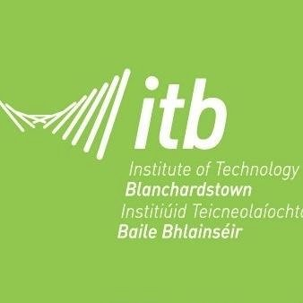

About this project
The purpose of this project is to create a fully functioning and well-designed modern website to illustrate the history and the story of the ITB college and the story it tells along the way. As students of ITB we see exactly hoe the campus functions and get to use the facilities provided on a day to day basis. We already understand what the college is and what we can expect from the campus, but we are also aware that the elements such as the campus, landscape, student count and community was not always this big and structured. We understand that ITB
started as a small campus many years ago and has developed over time into what it is today. We just don’t know how this has come to be. That is why we started this project. We want I research, identify and illustrate in the form of a website just what the story of ITB is and how it came to be. The purpose of the scope document is to aid us in fully planning out the project. This means we will have a good grasp on what our research is and what we can do with it. This scope will structure and create a firm understanding of what we have, who we want to aim our findings to and how exactly we want to present of findings.